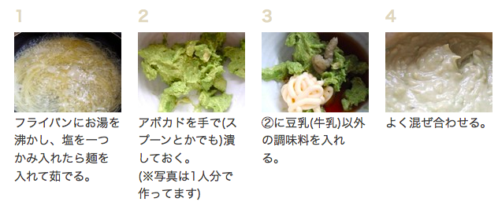
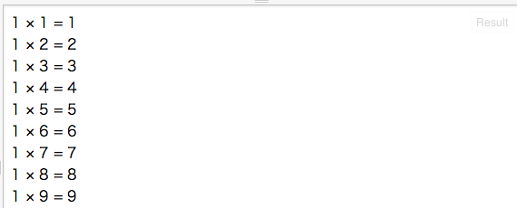

教育者, 将軍, 栄養士, 心理学者, 親はプログラムする
―『計算機プログラムの構造と解釈 第二版』序文
ある物事の進行状態についての順序・組み合わせ・筋などのこと。
Wikipedia 日本語版
プログラムとは、料理のレシピのようなもの
プログラムの中で、コンピュータに実行させるものを、特にコンピュータ・プログラムと呼ぶことがある
コンピュータは、決められた手順を正確に実行するのが得意
hello html
hello html
var out = document.getElementById("out");
out.innerHTML = "hello javascript";
ポイント：JavaScriptによって、HTMLを書き換えることができる
var out は、「outという変数を使うよ」とコンピュータに教えている
※ == と === の違いは両辺の値の型を比較するか否か。1=='1'はtrue、1==='1'はfalse
文字列の例："s", "こんにちは", "123", ""(空文字列)
// セミコロン無しでも動くけど…
var out = document.getElementById("out")
out.innerHTML = "hello javascript"
// 改行を無くすと動かなくなる
var out = document.getElementById("out")out.innerHTML = "hello javascript"
// セミコロンが付いていると、改行を無くしても動く
var out = document.getElementById("out");out.innerHTML = "hello javascript";
var out = document.getElementById("out");
※outは初めて使う変数なので、varキーワードで変数宣言をしている
hello html
var out = document.getElementById("out");
out.innerHTML = "hello javascript";
「+=」を使う
var out = document.getElementById("out");
out.innerHTML += "hello javascript";
var out = document.getElementById("out");
out.innerHTML = 1 + 1; // 「2」と表示
out.innerHTML = 1 + "1"; // 「11」と表示
out.innerHTML += 1; // innerHTMLの中身は文字列とみなされるので、必ず連結になる
<br>タグを使う
var out = document.getElementById("out");
out.innerHTML += "
";
out.innerHTML += "hello javascript";
10くらいなら手でもやれるけど、10000くらいになると、手ではやってられない
var out = document.getElementById("out");
var n = 1; // nという変数を宣言し、1を代入
while (n <= 10) { // nが10以下のとき、{}で囲まれた部分を実行する
out.innerHTML += n; // innerHTMLに数字を追加
out.innerHTML += "
"; // 改行を追加
n += 1; // nに1を足す
}
＜出力例＞
ヒント：JavaScriptの四則演算記号は以下の通り。
1 + 1; // 加算
1 - 1; // 減算
1 * 1; // 乗算（掛け算）は、*(アスタリスク)を使う
1 / 1; // 除算（割り算）は、/(スラッシュ)を使う
var out = document.getElementById("out");
var n = 1;
while (n <= 9) {
out.innerHTML += "1 × ";
out.innerHTML += n;
out.innerHTML += " = ";
out.innerHTML += 1 * n; // 掛け算の結果を追加
out.innerHTML += "
";
n += 1;
}
ヒント：while文を2つ組み合わせると楽ができる
var out = document.getElementById("out");
var n = 1;
var m;
while (n <= 9) {
m = 1;
while (m <= 9) {
out.innerHTML += n;
out.innerHTML += " × ";
out.innerHTML += m;
out.innerHTML += " = ";
out.innerHTML += n * m;
out.innerHTML += "
";
m += 1;
}
n += 1;
}
ヒント：次のページで書き方を教えます
var out = document.getElementById("out");
// add という名前のfunctionを定義する
function add (n, m) { // nとmという変数を宣言
return n + m; // n + m の結果を「返す」
}
out.innerHTML = add(1, 1); // 「1 + 1」の結果である「2」が表示される
function printMultiply (n, m) {
var out = document.getElementById("out");
out.innerHTML += n;
out.innerHTML += " × ";
out.innerHTML += m;
out.innerHTML += " = ";
out.innerHTML += n * m;
out.innerHTML += "
";
}
printMultiply(4, 2); // 4 × 2 = 8
printMultiply(593, 320); // 593 × 320 = 189760
n <= 9 のような「条件」に基いて、処理を実行するか否かを決定する構文
var out = document.getElementById("out");
var hour = 12;
var greeting = "";
if (hour <= 9) { // hour は 12 なので、 12 <= 9 は 偽
greetnig = "Good Morning!";
}
if (hour <= 19) { // hour は 12 なので、 12 <= 19 は 真
greeting = "Hello!";
}
if (hour > 19) { // hour は 12 なので、 12 > 19 は 偽
greeting = "Good Afternoon!"
}
out.innerHTML = greeting; // greetingには"Hello"が入っているので、"Hello"と表示される
if (条件) {条件が真の時実行される処理} という構造になっている
if()の条件が満たされなかった場合に実行される処理を書くelse文
var out = document.getElementById("out");
var hour = 12;
var greeting = "";
if (hour <= 9) { // hour は 12 なので、 12 <= 9 は 偽
greetnig = "Good Morning!";
} else { // 1つ前の条件が偽だったので、こちらが実行される
greeting = "Hello!";
}
out.innerHTML = greeting; // greetingには"Hello"が入っているので、"Hello"と表示される
if文を連続させる
var out = document.getElementById("out");
var hour = 12;
var greeting = "";
if (hour <= 9) { // hour は 12 なので、 12 <= 9 は 偽
greetnig = "Good Morning!";
} else if (hour <= 19){ // 1つ前の条件が偽だったので、次に判定される
// hour は 12 なので、 12 <= 19 は 真となり、greetingには"Hello"が入る
greeting = "Hello!";
} else if (hour > 19) { // 1つ前の条件が真だったので、ここは判定も実行もされない
greeting = "Good Afternoon!"
}
out.innerHTML = greeting; // greetingには"Hello"が入っているので、"Hello"と表示される
条件を複数組み合わせたい場合、&&(かつ)、||(または)を使う
var out = document.getElementById("out");
var hour = 12;
var minute = 0;
if (hour === 12 && minute === 0) {
out.innerHTML = "正午です";
}
ヒント：割った余りを調べるには、%(パーセント)を使う。例：1 % 2 は 1、 2 % 2 は 0、3 % 2 は 1、4 % 2 は 0